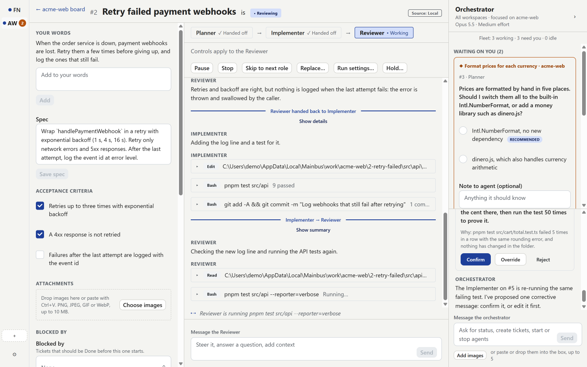

Planner, Implementer, Reviewer
Each role is a fresh agent that hands off to the next with a summary. When the Reviewer finds a gap, it sends the work back, up to three rounds, before the ticket comes to you.
Reorder, add or edit roles for each workspace, and pick the model and effort for each one.
